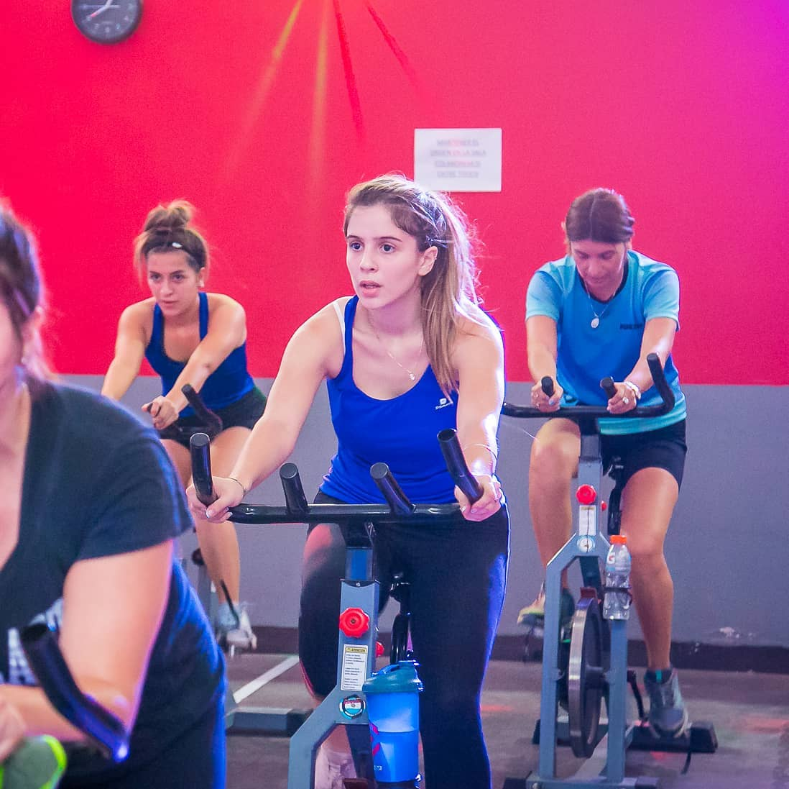

BodyPump

El Body Pump es un programa de entrenamiento físico intenso que combina actividad aeróbica y trabajo muscular mediante el levantamiento de pesas al ritmo de la música. Son sesiones dirigidas, divertidas y motivadoras, en las que se fortalece el sistema cardiovascular y la gran mayoría de los músculos del cuerpo.
Funcional

El entrenamiento funcional se basa en realizar ejercicios que se adaptan a los movimientos naturales del cuerpo humano para trabajar de forma global músculos y articulaciones
Spinning
Es un ejercicio aeróbico y cardiovascular que se realiza sobre una bicicleta estática en el que se trabaja el tren inferior: las piernas y los glúteos. Su finalidad principal es perder peso y la tonificación de los músculos, además de mejorar la fuerza y la resistencia.